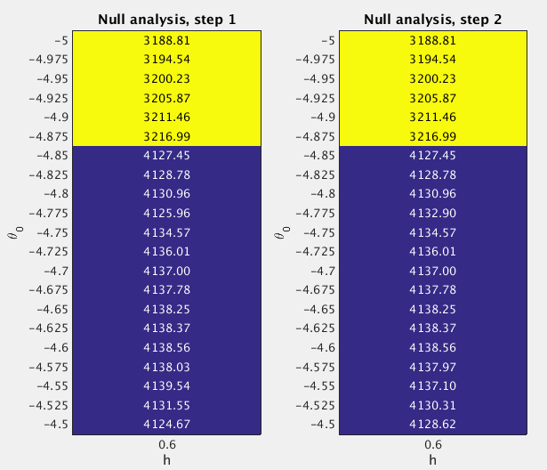

22.2 GSEA Round 2
Last updated: 2017-04-12
Code version: 165dd72eeaecde46dbd09f1ee0d64c1b665f38fb
22.2.1 Fit the null model
From the Round 1 null analysis (Section 22.1), I found that almost 99.99% posterior mass is concentrated on the setting (h=0.6, theta0=-4.75). In Round 2, I used a finer grid. Specifically, I used the grids theta0=(-5:0.025:-4.5)' and h=0.6 when fitting the null model. I estimated the (unnormalized) log importance weights (“pseudo-likelihoods”) for all 21 sets of (h,theta0) under null.

After normalizing the log “pseudo-likelihoods” (logw.step*) to posterior probabilities (posp.step*), we can see that more than 99.99% posterior mass is concentrated on the settings h=0.6 and theta0=(-4.8:0.025:-4.55)'.
theta0.index <- as.character(null.df$theta0) %in% as.character(seq(-4.8,-4.55,by=0.025))
sum(null.df$posp.step2[theta0.index]) ## [1] 0.999907222.2.2 Fit the enrichment model
To perform GSEA, I set h=0.6 and theta0=(-4.8:0.025:-4.55)', since the null analysis suggests that more than 99.99% posterior mass is placed on these settings. For the log-fold enrichment parameter, I use the grid theta=(0:(4/200):4)', based on the Round 1 enrichment analysis (Section 22.1). The following table lists the GSEA results.